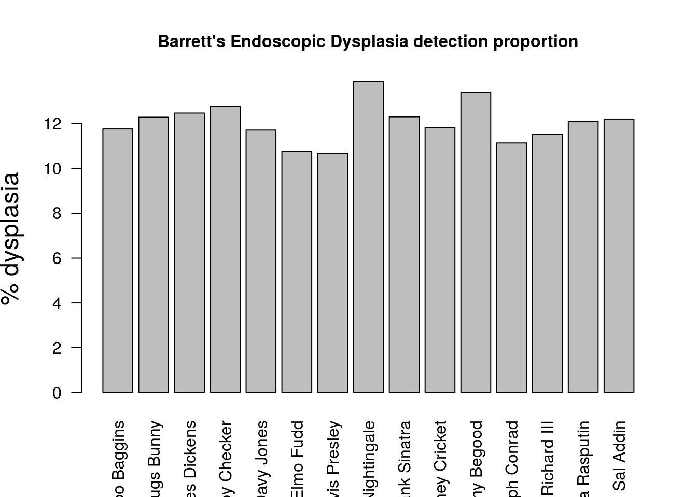

Now that we have examined how to get examples of Endoscopic performance by analysis of documentation, we can perform the more interesting task of determining endoscopic performance by determining the pathology taken at endoscopy. This means we have to merge two datasets and then extract pathology based on the endoscopy results.
We will determine the dysplasia detection rate in our sample of Barrett’s endoscopies and we will do this per endoscopist so we can get an overview of who is the best at detecting dysplasia in Barrett’s oesopahgus. Note this is very similar to the concept of an adenoma detection rate in colonoscopy.
We start by defining our datasets. We have done this before as part of the Surveillance page so I’m not going to repeat it here. We can just start using it.
This is what the merged dataset looks like (truncated for ease of viewing):
EndoHistoMerge<-source('EndoPathMerged_ExternalCode.R')
EndoHistoMerge<-data.frame(EndoHistoMerge)
#Neaten up the names
names(EndoHistoMerge)<-gsub("value.","",names(EndoHistoMerge),fixed=T)
kable(head(EndoHistoMerge,5))| EndoHospNumId | EndoReports | Date.x | Endoscopist | Midazolam | Fentanyl | Indication | Diagnosis | BarrC | BarrM | Histop_dfHospNumId | HistoReport | Date.y | Macro | Diagnoses | Days | visible |
|---|---|---|---|---|---|---|---|---|---|---|---|---|---|---|---|---|
| G244224 | Date of Procedure 2015-01-07 Endoscopist: Dr Jimminey Cricket Midazolam: 1mg Fentanyl: 12.5mcg Indication: Follow-up ULCER HEALING Diagnosis: Ulcer- Oesophageal. .Gastritis.Oesophagitis. .Barretts oesophagus. .Possible achalasia..Extensive neoplastic looking esophageal lesion. .Post chemo-radiotherapy stricture .Esophageal candidiasis .Hiatus Hernia. Barrett’s oesophagus length: C2M9 | 2015-01-07 | Jimminey Cricket | 1 | 12.5 | Follow-up ULCER HEALING | Diagnosis: Ulcer- Oesophageal. .Gastritis.Oesophagitis. .Barretts oesophagus. .Possible achalasia..Extensive neoplastic looking esophageal lesion. .Post chemo-radiotherapy stricture .Esophageal candidiasis .Hiatus Hernia. Barrett’s oesophagus length: C2M9 | 2 | 9 | G244224 | Date received: 2015-01-06 Macrosopic description: 3 specimens collected the largest measuring 3 x 5 x 1 mm and the smallest 1 x 4 x 4 mm Diagnoses There is some ulceration..The appearances are those of Candida oesophagitis..Neither dysplasia nor malignancy is seen..High grade dysplasia is present throughout this sample | 2015-01-06 | 3 specimens collected the largest measuring 3 x 5 x 1 mm and the smallest 1 x 4 x 4 mm | There is some ulceration..The appearances are those of Candida oesophagitis..Neither dysplasia nor malignancy is seen..High grade dysplasia is present throughout this sample | 1 days | FALSE |
| P433224 | Date of Procedure 2016-09-19 Endoscopist: Dr Joseph Conrad Midazolam: 5mg Fentanyl: 100mcg Indication: Dyspepsia Diagnosis: Oesophagitis. .Gastritis | 2016-09-19 | Joseph Conrad | 5 | 100.0 | Dyspepsia | Diagnosis: Oesophagitis. .Gastritis | NA | NA | P433224 | Date received: 2016-09-20 Macrosopic description: 2 specimens collected the largest measuring 1 x 2 x 2 mm and the smallest 3 x 5 x 2 mm Diagnoses High grade dysplasia is present throughout this sample.There is no significant increase in intraepithelial eosinophils..The biopsies of oesophageal squamous mucosa show surface erosion and active chronic inflammation..The appearances are consistent with, but not specific for Barrett’s (columnar lined) oesophagus..There is some ulceration. | 2016-09-20 | 2 specimens collected the largest measuring 1 x 2 x 2 mm and the smallest 3 x 5 x 2 mm | High grade dysplasia is present throughout this sample.There is no significant increase in intraepithelial eosinophils..The biopsies of oesophageal squamous mucosa show surface erosion and active chronic inflammation..The appearances are consistent with, but not specific for Barrett’s (columnar lined) oesophagus..There is some ulceration. | 1 days | FALSE |
| K522332 | Date of Procedure 2015-08-12 Endoscopist: Dr Rara Rasputin Midazolam: 7mg Fentanyl: 150mcg Indication: Other- Diagnosis: Barretts oesophagus. .Hiatus Hernia. .Extensive neoplastic looking esophageal lesion. .Gastritis.Oesophagitis. .Possible achalasia..Post chemo-radiotherapy stricture .Ulcer- Oesophageal. .Food bolus obstructing the oesophagus..Esophageal candidiasis Barrett’s oesophagus length: C1M4 | 2015-08-12 | Rara Rasputin | 7 | 150.0 | Other- | Diagnosis: Barretts oesophagus. .Hiatus Hernia. .Extensive neoplastic looking esophageal lesion. .Gastritis.Oesophagitis. .Possible achalasia..Post chemo-radiotherapy stricture .Ulcer- Oesophageal. .Food bolus obstructing the oesophagus..Esophageal candidiasis Barrett’s oesophagus length: C1M4 | 1 | 4 | K522332 | Date received: 2015-08-13 Macrosopic description: 8 specimens collected the largest measuring 3 x 2 x 5 mm and the smallest 3 x 5 x 1 mm Diagnoses There is mild regenerative epithelial change, but neither dysplasia nor malignancy is seen..The biopsies of oesophageal squamous mucosa show surface erosion and active chronic inflammation.. No herpetic viral inclusions are seen..There is reactive basal cell hyperplasia and mild inflammatory epithelial atypia..The appearances are consistent with the endoscopic diagnosis of Barrett’s oesophagus with active chronic inflammation..Intestinal metaplasia is present.. There is no dysplasia and no invasive carcinoma.. PAS staining shows occasional spores, consistent with candida..High grade dysplasia is present throughout this sample | 2015-08-13 | 8 specimens collected the largest measuring 3 x 2 x 5 mm and the smallest 3 x 5 x 1 mm | There is mild regenerative epithelial change, but neither dysplasia nor malignancy is seen..The biopsies of oesophageal squamous mucosa show surface erosion and active chronic inflammation.. No herpetic viral inclusions are seen..There is reactive basal cell hyperplasia and mild inflammatory epithelial atypia..The appearances are consistent with the endoscopic diagnosis of Barrett’s oesophagus with active chronic inflammation..Intestinal metaplasia is present.. There is no dysplasia and no invasive carcinoma.. PAS staining shows occasional spores, consistent with candida..High grade dysplasia is present throughout this sample | 1 days | FALSE |
| P223333 | Date of Procedure 2013-05-09 Endoscopist: Dr Jimminey Cricket Midazolam: 8mg Fentanyl: 100mcg Indication: Reflux-like Symptoms/Atypical Chest Pain Diagnosis: Barretts oesophagus. | 2013-05-09 | Jimminey Cricket | 8 | 100.0 | Reflux-like Symptoms/Atypical Chest Pain | Diagnosis: Barretts oesophagus. | NA | NA | P223333 | Date received: 2013-05-10 Macrosopic description: 1 specimens collected the largest measuring 5 x 1 x 5 mm and the smallest 2 x 3 x 2 mm Diagnoses The appearances are consistent with, but not specific for Barrett’s (columnar lined) oesophagus..There is some ulceration.. There is mild regenerative epithelial change, but neither dysplasia nor malignancy is seen..No granulomas or viral inclusions are seen..The biopsies of oesophageal squamous mucosa show surface erosion and active chronic inflammation.. No herpetic viral inclusions are seen.. There is no dysplasia and no invasive carcinoma. | 2013-05-10 | 1 specimens collected the largest measuring 5 x 1 x 5 mm and the smallest 2 x 3 x 2 mm | The appearances are consistent with, but not specific for Barrett’s (columnar lined) oesophagus..There is some ulceration.. There is mild regenerative epithelial change, but neither dysplasia nor malignancy is seen..No granulomas or viral inclusions are seen..The biopsies of oesophageal squamous mucosa show surface erosion and active chronic inflammation.. No herpetic viral inclusions are seen.. There is no dysplasia and no invasive carcinoma. | 1 days | FALSE |
| S553322 | Date of Procedure 2015-02-02 Endoscopist: Dr Elmo Fudd Midazolam: 5mg Fentanyl: 125mcg Indication: Haematemesis or Melaena/Blood PR Diagnosis: Oesophagitis. .Post chemo-radiotherapy stricture .Possible achalasia..Food bolus obstructing the oesophagus. Barrett’s oesophagus length: C0M5 | 2015-02-02 | Elmo Fudd | 5 | 125.0 | Haematemesis or Melaena/Blood PR | Diagnosis: Oesophagitis. .Post chemo-radiotherapy stricture .Possible achalasia..Food bolus obstructing the oesophagus. Barrett’s oesophagus length: C0M5 | 0 | 5 | S553322 | Date received: 2015-02-03 Macrosopic description: 10 specimens collected the largest measuring 5 x 1 x 4 mm and the smallest 4 x 4 x 3 mm Diagnoses No herpetic viral inclusions are seen..Basal hyperplasia is prominent.No granulomas or viral inclusions are seen..There is low grade dysplasia.There is some ulceration..There is no significant increase in intraepithelial eosinophils. | 2015-02-03 | 10 specimens collected the largest measuring 5 x 1 x 4 mm and the smallest 4 x 4 x 3 mm | No herpetic viral inclusions are seen..Basal hyperplasia is prominent.No granulomas or viral inclusions are seen..There is low grade dysplasia.There is some ulceration..There is no significant increase in intraepithelial eosinophils. | 1 days | FALSE |
So the task now involves extracting the presence of dysplasia in those patients where Barrett’s was detected at endoscopy and then grouping them by endoscopist
So to spell out where each element of this comes from:
1. Detect rows that mention Barrett’s in the endoscopy report.
2. Also detect rows that mention dysplasia in the pathology report.
3. Group by endoscopist.
4. Then get the total number of reports that mention Barrett’s in the endoscopy report whether dyplasia is metioned or not, and group by endoscopist.
5. Calculate proportion by endoscopist then visualise it.
This is done using grepl. We will do a combined grepl so we can get the subset we are interested in and that mention dysplasia in the pathology report.
DysplasticBarretts<-EndoHistoMerge[grepl("[Bb]arrett",EndoHistoMerge$EndoReports)&grepl("[Dd]ysplasi",EndoHistoMerge$HistoReport),]So you will note that there are several reports where it is mentioned that there is no dysplasia so we have to get rid of these. This is tricky but for the purposes of this site we will use the brute force technique
DysplasticBarretts<-DysplasticBarretts[!grepl("[Nn]either dysplasia",DysplasticBarretts$Diagnoses)&!grepl("[Nn]o [Dd]ysplasia",DysplasticBarretts$Diagnoses),]There are two ways of doing this. The first way is to use dplyr as follows:
EndoscopistDDRBarretts<-DysplasticBarretts%>%group_by(Endoscopist)%>%summarise(n=n())
kable(EndoscopistDDRBarretts)| Endoscopist | n |
|---|---|
| Bilbo Baggins | 105 |
| Bugs Bunny | 107 |
| Charles Dickens | 100 |
| Chubby Checker | 96 |
| Davy Jones | 121 |
| Elmo Fudd | 91 |
| Elvis Presley | 94 |
| Florence Nightingale | 92 |
| Frank Sinatra | 103 |
| Jimminey Cricket | 123 |
| Jonny Begood | 107 |
| Joseph Conrad | 130 |
| King Richard III | 92 |
| Rara Rasputin | 88 |
| Sal Addin | 95 |
Alternatively we can just use the table function which has a neater input but gives a messier output:
DDRtable<-table(EndoscopistDDRBarretts)
kable(DDRtable)| 88 | 91 | 92 | 94 | 95 | 96 | 100 | 103 | 105 | 107 | 121 | 123 | 130 | |
|---|---|---|---|---|---|---|---|---|---|---|---|---|---|
| Bilbo Baggins | 0 | 0 | 0 | 0 | 0 | 0 | 0 | 0 | 1 | 0 | 0 | 0 | 0 |
| Bugs Bunny | 0 | 0 | 0 | 0 | 0 | 0 | 0 | 0 | 0 | 1 | 0 | 0 | 0 |
| Charles Dickens | 0 | 0 | 0 | 0 | 0 | 0 | 1 | 0 | 0 | 0 | 0 | 0 | 0 |
| Chubby Checker | 0 | 0 | 0 | 0 | 0 | 1 | 0 | 0 | 0 | 0 | 0 | 0 | 0 |
| Davy Jones | 0 | 0 | 0 | 0 | 0 | 0 | 0 | 0 | 0 | 0 | 1 | 0 | 0 |
| Elmo Fudd | 0 | 1 | 0 | 0 | 0 | 0 | 0 | 0 | 0 | 0 | 0 | 0 | 0 |
| Elvis Presley | 0 | 0 | 0 | 1 | 0 | 0 | 0 | 0 | 0 | 0 | 0 | 0 | 0 |
| Florence Nightingale | 0 | 0 | 1 | 0 | 0 | 0 | 0 | 0 | 0 | 0 | 0 | 0 | 0 |
| Frank Sinatra | 0 | 0 | 0 | 0 | 0 | 0 | 0 | 1 | 0 | 0 | 0 | 0 | 0 |
| Jimminey Cricket | 0 | 0 | 0 | 0 | 0 | 0 | 0 | 0 | 0 | 0 | 0 | 1 | 0 |
| Jonny Begood | 0 | 0 | 0 | 0 | 0 | 0 | 0 | 0 | 0 | 1 | 0 | 0 | 0 |
| Joseph Conrad | 0 | 0 | 0 | 0 | 0 | 0 | 0 | 0 | 0 | 0 | 0 | 0 | 1 |
| King Richard III | 0 | 0 | 1 | 0 | 0 | 0 | 0 | 0 | 0 | 0 | 0 | 0 | 0 |
| Rara Rasputin | 1 | 0 | 0 | 0 | 0 | 0 | 0 | 0 | 0 | 0 | 0 | 0 | 0 |
| Sal Addin | 0 | 0 | 0 | 0 | 1 | 0 | 0 | 0 | 0 | 0 | 0 | 0 | 0 |
So now we know who is picking up dysplasia we can express this as a proportion of all the Barrett’s endoscopy they have done as follows:
AllBarretts<-EndoHistoMerge[grepl("[Bb]arrett",EndoHistoMerge$EndoReports),]
Endoscopist_All_Barretts<-AllBarretts%>%group_by(Endoscopist)%>%summarise(n=n())Now we just calulate the proportions to get the DDR. We have to bind Endoscopist_All_Barretts and EndoscopistDDRBarretts to calculate this. We merge by endoscopist
#For a bit of variety we are going to do the merge using dplyr join functions instead of base R merge functions:
DDRTable<-full_join(Endoscopist_All_Barretts, EndoscopistDDRBarretts, by = "Endoscopist")And finally the proportions:
DDRTable$Prop<-(DDRTable$n.y/DDRTable$n.x)*100
DDRTable<-data.frame(DDRTable)
#Lets get rid of NA values by replacing with "0"
DDRTable$Prop[is.na(DDRTable$Prop)] <- 0
#Lets plot it out
barplot(DDRTable$Prop,names.arg=DDRTable$Endoscopist, ylab = "% dysplasia",
cex.lab = 1.5,cex.axis=1.0,cex.main = 1.0,cex.names=1.0,main = "Barrett's Endoscopic Dysplasia detection proportion",las=2)
….Looks like some people need more training…